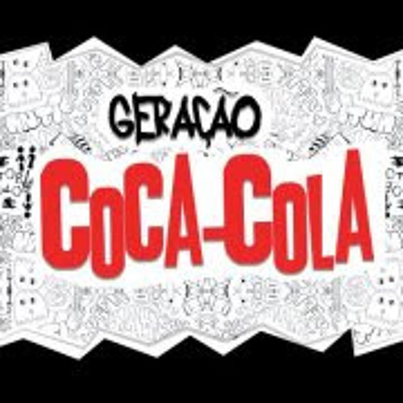
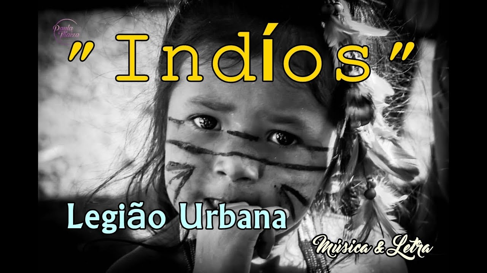

| Que País É Esse? | Geração Coca-cola | Índios |
|---|---|---|
|  |  |
Nas favelas, no senado
Sujeira pra todo lado
Ninguém respeita a constituição
Mas todos acreditam no futuro da nação
Que país é esse?
Que país é esse?
Que país é esse?
No Amazonas, no Araguaia-ia-ia
Na Baixada Fluminense
Mato Grosso, Minas Gerais
E no nordeste tudo em paz
Na morte eu descanso
Mas o sangue anda solto
Manchando os papéis
Documentos fiéis
Ao descanso do patrão
Que país é esse?
Que país é esse?
Que país é esse?
Que país é esse?
Terceiro mundo se for
Piada no exterior
Mas o Brasil vai ficar rico
Vamos faturar um milhão
Quando vendermos todas as alma
Dos nossos índios num leilão
Que país é esse?
Que país é esse?
Que país é esse?
Que país é esse?
Quando nascemos fomos programados
A receber o que vocês nos empurraram
Com os enlatados dos U.S.A., de nove as seis
Desde pequenos nós comemos lixo
Comercial e industrial
Mas agora chegou nossa vez
Vamos cuspir de volta o lixo em cima de vocês
Somos os filhos da revolução
Somos burgueses sem religião
Somos o futuro da nação
Geração Coca-Cola
Depois de vinte anos na escola
Não é difícil aprender
Todas as manhas do seu jogo sujo
Não é assim que tem que ser
Vamos fazer nosso dever de casa
E aí então, vocês vão ver
Suas crianças derrubando reis
Fazer comédia no cinema com as suas leis
Somos os filhos da revolução
Somos burgueses sem religião
Somos o futuro da nação
Geração Coca-Cola
Geração Coca-Cola
Geração Coca-Cola
Geração Coca-Cola
Depois de vinte anos na escola
Não é difícil aprender
Todas as manhas do seu jogo sujo
Não é assim que tem que ser
Vamos fazer nosso dever de casa
E aí então, vocês vão ver
Suas crianças derrubando reis
Fazer comédia no cinema com as suas leis
Somos os filhos da revolução
Somos burgueses sem religião
Somos o futuro da nação
Geração Coca-Cola
Geração Coca-Cola
Geração Coca-Cola
Geração Coca-Cola
Quem me dera ao menos uma vez
Ter de volta todo o ouro que entreguei a quem
Conseguiu me convencer que era prova de amizade
Se alguém levasse embora até o que eu não tinha
Quem me dera ao menos uma vez
Esquecer que acreditei que era por brincadeira
Que se cortava sempre um pano de chão
De linho nobre e pura seda
Quem me dera ao menos uma vez
Explicar o que ninguém consegue entender
Que o que aconteceu ainda está por vir
E o futuro não é mais como era antigamente
Quem me dera ao menos uma vez
Provar que quem tem mais do que precisa ter
Quase sempre se convence que não tem o bastante
Fala demais por não ter nada a dizer
Quem me dera ao menos uma vez
Que o mais simples fosse visto como o mais importante
Mas nos deram espelhos
E vimos um mundo doente
Quem me dera ao menos uma vez
Entender como um só Deus ao mesmo tempo é três
E esse mesmo Deus foi morto por vocês
Sua maldade, então, deixar um Deus tão triste
Eu quis o perigo e até sangrei sozinho, entenda
Assim pude trazer você de volta pra mim
Quando descobri que é sempre só você
Que me entende do início ao fim
E é só você que tem a
Cura pro meu vício de insistir
Nessa saudade que eu sinto
De tudo que eu ainda não vi
Quem me dera ao menos uma vez
Acreditar por um instante em tudo que existe
Acreditar que o mundo é perfeito
E que todas as pessoas são felizes
Quem me dera ao menos uma vez
Fazer com que o mundo saiba que seu nome
Está em tudo e, mesmo assim
Ninguém lhe diz, ao menos: Obrigado
Quem me dera ao menos uma vez
Como a mais bela tribo
Dos mais belos índios
Não ser atacado por ser inocente
Eu quis o perigo e até sangrei sozinho, entenda
Assim pude trazer você de volta pra mim
Quando descobri que é sempre só você
Que me entende do início ao fim
E é só você que tem a
Cura pro meu vício de insistir
Nessa saudade que eu sinto
De tudo que eu ainda não vi
Nos deram espelhos e vimos um mundo doente
Tentei chorar e não consegui